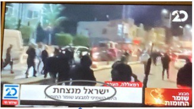
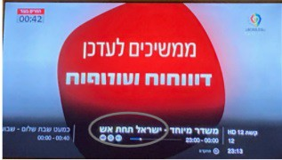
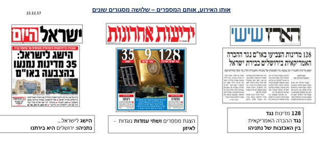

חזרה →
touch_app מושגי מפתח מהאגרון (גע במושג לפירוש)
crop_free מסגור
thumb_up מסגור חיובי
thumb_down מסגור שלילי/קורבני
format_quote בחירת מילים ומושגים
link הקשר (Context)
crop_free הגדרה
edit מהו מסגור?
מסגור הוא האופן שבו עיתונאים מעצבים תוכן חדשותי מסוים, על ידי זה שהם משלבים אותו בתוך הֶקשֶר.
עיתונאים מכלילים מידע בתוך הקשר מסוים ובכך מעניקים לו משמעות מסוימת.
חשוב להזכיר: לא תמיד מדובר ב"קונספירציה", נקודת המבט יכולה להיות בשל עמדה אידיאולוגית, שיקולים מסחריים, שיקולים מקצועיים ועוד.
חשוב להזכיר 2: התקשורת לא יכולה לפעול אחרת. לא ניתן להעביר את המציאות באופן מלא ושלם – לעולם זה יתבצע דרך נקודת מבט מסוימת.
psychology השפעה
visibility כיצד משפיע המסגור עלינו?
למסגור השלכות על פענוח הטקסט: ההנחה היא שהקהל נוטה לקבל את המסגרות שמציעה התקשורת, ולכן לרוב יפענח את התוכן (ואת המציאות) בהתאם לאותן מסגרות.
דרכים לביצוע מסגור:
- שימוש במילים ובמושגים (למשל: "מגפת הקורונה" לעומת "המלחמה בקורונה").
- שימוש בצבעים ובאמצעים חזותיים (צבעים קודרים או חגיגיים, תמונות ספציפיות).
- חיבור בין ידיעות (למשל, הצמדת ידיעה על שריפה לידיעה על טרור לעומת ידיעה על משבר האקלים).
compare דוגמאות
tv דוגמה: מבצע "שומר החומות" (מאי 2021)


דוגמאות נוספות למסגור בעיתונות:
- "הארץ": מסגור שלילי (החלטה נגד ישראל).
- "ידיעות אחרונות": מסגור דרמטי וניטרלי.
- "ישראל היום": מסגור חיובי של הישג.
assignment תרגיל
school תרגיל ניתוח מסגור
המשימה: בחרו שני שערי עיתונים (או עמודי בית של אתרי חדשות) שעוסקים באותו נושא.
- הסבירו כיצד כל אחד מהם ממסגר את הידיעה.
- התייחסו לטקסט (כותרות, מילים נבחרות).
- התייחסו להיבטים חזותיים (תמונות, צבעים, גודל).

לאתר "העין השביעית" (סקירת עיתונות) →
חזרה →